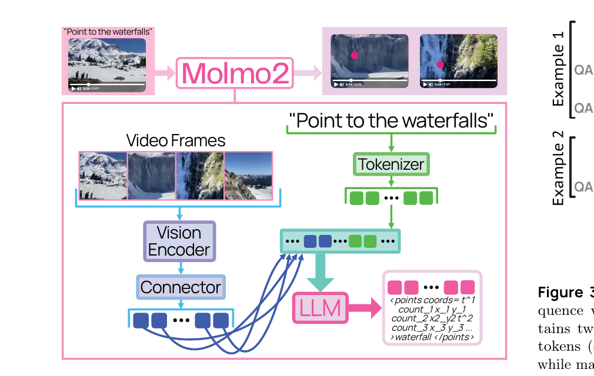
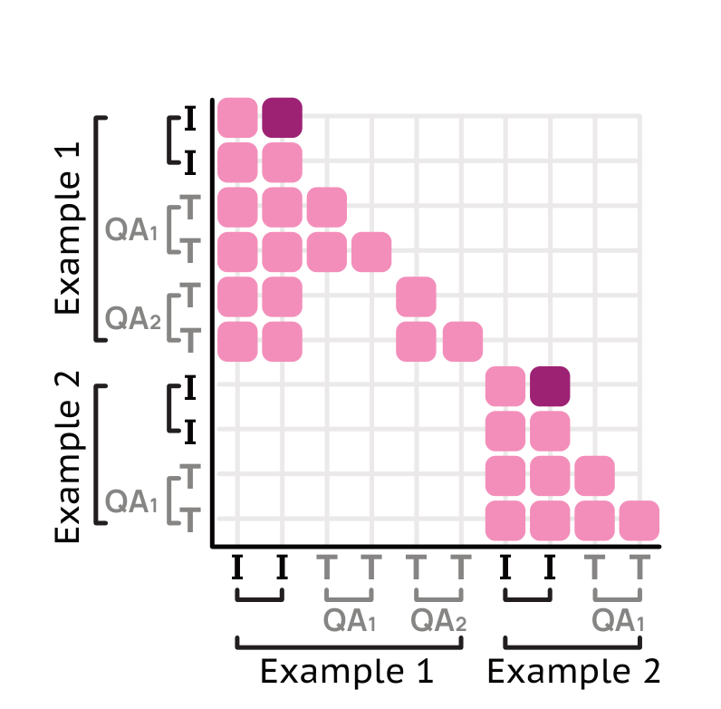

Molmo2: open video VLMs, grounding data, and the training system that makes them fit
The short version. Molmo2 asks a practical question that most video-language papers dodge: what would it take to build a strong video VLM without closed-model distillation, while also teaching it to point and track in video? A vision-language model, or VLM, joins a visual encoder to a language model so it can answer questions about images or videos. Molmo2 keeps that standard architecture. Its novelty is the open data and the training system around it. The paper contributes nine new datasets, including dense video captions, long-form video QA, video pointing, video tracking, multi-image QA, and multi-image pointing, all collected or generated without closed VLM outputs. It then makes the training tractable with packing, message trees, visual-token bidirectional attention, and token weighting. The best 8B model is not the strongest model on every video benchmark, especially long-video QA, but it is the strongest fully open data-and-code model in the paper's target zone: short video, captioning, counting, pointing, and tracking.

1. Motivation: why does openness matter more here than another leaderboard row?
The strongest video-language systems are still mostly proprietary. Some open-weight systems also rely on synthetic captions or answers from closed VLMs, which makes them distillation systems even when their weights are downloadable. That creates a weak foundation for research: the community can fine-tune the model, but it cannot audit the source of the behavior or rebuild the data path.
Molmo2 targets a second missing piece: grounding. Grounding means connecting a text answer to a location in the visual input. In a video, that location has both space and time. A grounded answer can say where the bison is at 32.1 seconds, or track which dancer moves between groups. A plain captioning VLM can talk about the scene, but it cannot reliably return the point or trajectory a user can inspect.
Q: Why is video grounding harder than image grounding?
Guide: an image point has two coordinates. A video point needs a timestamp as well, and tracking adds identity across frames.
A: The model must solve three jobs at once. It has to find the right frame, place the point inside the object or event, and keep object identity consistent when the same entity appears again. That is why prompt engineering is not enough. The model needs training examples where the answer is a structured point or track, not only a sentence.
Takeaway: Molmo2 treats grounding as a data format and training problem, not as a post-hoc prompting trick.
2. Contributions: what the paper actually adds
The stated contributions are three. First, Molmo2 is a family of VLMs with open weights, open data, and open code. The paper releases 4B and 8B variants based on Qwen3 LLMs and a 7B variant based on OLMo 3. Second, it builds seven new video datasets and two new multi-image datasets without using closed VLM outputs. Third, it introduces a training recipe that makes the mixture workable: sequence packing, message-tree encoding, visual-token bidirectional attention, and token-level loss weighting.
The larger reader-level takeaway is more specific. Molmo2 is not claiming that a standard ViT-plus-LLM architecture suddenly solves video. It claims that a standard architecture becomes much more useful when the data includes dense captions, long-form QA, pointing, counting, and tracking, and when the training system stops long examples from wasting compute or dominating the loss.
Q: Where is the real novelty, if the model backbone is standard?
A: The novelty is in the interface between data and the model. Molmo2 turns heterogeneous annotations into one conversation-like stream, then uses masks and weights so the stream is efficient and balanced. That is the part a reader should carry forward.
Takeaway: The paper's technical center is not a new transformer block. It is a training substrate for open multimodal data.
3. Data: nine new datasets under a no-closed-VLM constraint
The paper creates five human-annotated datasets and four synthetic datasets, then augments them with curated open academic data. The important constraint is not "no synthetic data." Molmo2 does use synthetic QA. The constraint is that the synthetic branch is driven by the authors' own captioning model and text-only tools, not by a proprietary VLM whose behavior would be hidden.
The new video data covers dense captioning, long-form video QA, subtitle-grounded QA, video pointing, and video tracking. The new multi-image data covers semantically related image-set QA and multi-image pointing/counting. The curated video grounding data converts existing tracking and segmentation datasets into point or track supervision, often using SAM 2 to turn bounding boxes into segmentation masks before sampling points.
| Dataset group | Sampling rate | Datasets | Examples | Role in the mixture |
|---|---|---|---|---|
| Captions / Long QA | 13.6% | 6 | 1.2m | Image and video captioning plus long-form QA, including Molmo2-Cap, AskModelAnything, MultiImageQA, and PixMo caption/QA data. |
| Image QA | 22.7% | 32 | 2.4m | Multiple-choice and short-answer image QA, including Molmo2-SynMultiImageQA and open-source image/multi-image datasets. |
| Video QA | 18.2% | 32 | 2.4m | Video QA, including Molmo2-CapQA, SubtitleQA, and open video datasets; the paper down-samples this group because video benchmarks converge quickly. |
| Image Pointing | 9.1% | 4 | 1.1m | PixMo-Points, PixMo-Count, CoSyn-Point, and Molmo2-MultiImagePoint, with high-count examples emphasized. |
| Video Pointing | 13.6% | 7 | 0.37m | Molmo2-VideoPoint plus AcademicVideoPoint, upsampled because the task is slow to converge. |
| Video Tracking | 13.6% | 22 | 0.80m | Molmo2-VideoTrack plus AcademicVideoTrack, re-weighted to emphasize tail concepts. |
| NLP | 9.1% | 1 | 0.99m | Text-only SFT data from Tulu to preserve language ability. |
How to read it: the sampling rates are not proportional to raw dataset size. They are a manual training mixture. Video QA has many examples but is downsampled, while video pointing is upsampled because it converges more slowly. That same balancing problem appears again inside the loss, where a 4,000-token caption could otherwise overwhelm many one-token answers.
4. Pipeline: how video becomes tokens and points become text
{kind=link}

<points coords=...>waterfall</points>. The figure matters because it locates the paper's innovation: not in the ViT-plus-LLM spine, but in how inputs, outputs, masks, and losses are organized.For videos, Molmo2 samples frames at \(S=2\) fps and treats each frame as a single crop, downscaling when needed. The default maximum is \(F=128\) frames, and long-context training raises it to \(F=384\). If the video is longer than \(F/S\), the system uniformly samples \(F\) frames and always keeps the last frame.
The connector pools image patches with 2x2 windows for images and 3x3 windows for video frames. The 3x3 video pooling is a compute choice: it reduces the number of visual tokens per frame. The LLM then sees visual tokens, timestamps, optional subtitles, and text prompts in one sequence. Visual tokens are allowed to forward-attend to one another, including tokens from different frames or images.
Q: Why not use a specialized video encoder?
A: The paper chooses reuse over specialization. Each frame is processed like an image, which keeps the model close to proven image VLM infrastructure. The cost is linear growth with frame count, so the training system has to fight token count through pooling, packing, and long-context context parallelism.
Takeaway: Molmo2 buys openness and architectural simplicity, then pays for them with a careful data pipeline.
5. Method: packing, message trees, and loss weights
The method section is easiest to understand as one bottleneck. A training example can be tiny, like a one-token multiple-choice answer, or huge, like a video caption with more than 4,000 output tokens. A naive batch would waste padding on short examples and let long captions dominate the loss. Molmo2 solves those two failures separately.
5.1 Packing solves wasted padding
Packing merges multiple examples into one long sequence. The appendix states the actual selection problem. The data loader keeps a pool of \(M=48\) preprocessed examples. When the pool is full, it chooses a subset that best fills the text-token and crop budgets.
How to read Eq. 1
The objective is not a model loss. It is a bin-packing rule for the data loader. It tries to fill a 16,384-token sequence without exceeding 128 crops. During long-context training, the budgets become 36,864 tokens and 384 images.
5.2 Message trees share the visual prefix without leaking answers
{kind=link}

A message tree starts with the shared visual input and branches into separate annotations. Linearizing the tree would be unsafe if the second answer could read the first answer. The custom mask blocks that path. The paper reports that examples average four annotations, and packing fits 3.8 examples into a 16,384-token sequence during SFT, which the paper reports as a 15x training-efficiency gain over unpacked training.
5.3 Token weighting keeps long outputs from owning the loss
Token weighting handles the second imbalance. Video captions and point outputs can be very long, so Molmo2 assigns fixed weights to them. The paper uses 0.1 for video captions and 0.2 for pointing. For other tasks, it uses a length-dependent heuristic.
Why this weight has the right direction
If an answer has many tokens, each token should count less, or the example overwhelms many short-answer examples. If an answer has few tokens, each token can carry more weight. The paper also normalizes per-device gradients by the average number of loss tokens across devices, which avoids silently up-weighting devices that happened to receive shorter responses.
Q: Do packing and token weighting solve the same problem?
A: No. Packing is about compute: it stops short examples from wasting sequence length. Token weighting is about optimization: it stops long answers from dominating the gradient. Message trees sit between them, because they save compute only when the attention mask preserves the meaning of separate annotations.
Takeaway: The 15x efficiency claim depends on all three pieces: pack sequences densely, share visual prefixes, and keep branches isolated.
6. Training and compute ledger
Molmo2 trains in three stages. Pre-training is image-only and includes dense captioning, transcript prediction, pointing, counting, and filtered Tulu NLP data. SFT then mixes image, video, multi-image, grounding, and NLP data at a 16,384-token length. Long-context SFT is a short final stage at 36,864 tokens with \(F=384\), using context parallelism so each example is processed by a group of eight GPUs.
| Stage | Sequence length | Steps | Batch size | Key settings |
|---|---|---|---|---|
| Image pre-training | 2,560 | 32k | 128 | 60% captioning, 30% image pointing, 10% natural language; all parameters fine-tuned; separate ViT, connector, and LLM learning rates. |
| Joint SFT | 16,384 | 30k | 128 | Molmo2, PixMo, Tulu, and open video/image datasets; regular residual dropout 0.1; packing and message trees active. |
| Long-context SFT | 36,864 | 2k | 128 | \(F=384\); context parallelism on the LLM with groups of eight GPUs; Ulysses attention supports the custom masks. |
| Model | Pre-train GPUs | Pre-train time | Pre-train GPU hr. | SFT GPUs | SFT time | SFT GPU hr. | Long-context GPUs | Long-context time | Long-context GPU hr. |
|---|---|---|---|---|---|---|---|---|---|
| Molmo2-4B | 32 | 15.2 | 490 | 128 | 58.8 | 7.5k | 128 | 25.3 | 3.2k |
| Molmo2-O-7B | 64 | 11.3 | 720 | 128 | 59.3 | 7.6k | 128 | 25.7 | 3.3k |
| Molmo2-8B | 64 | 12.1 | 780 | 128 | 63.0 | 8.1k | 128 | 26.0 | 3.3k |
How to read it: the full Molmo2-8B run is roughly 12.2k H100 GPU-hours across the three listed stages. That is a rough estimate from the paper's disclosed numbers, not an actual bill. The paper also notes that SFT time is heavily affected by the ViT, because video uses nine ViT patches for each visual token passed into the LLM.
7. Results: what the tables actually support
Start with the broad video table. The full paper table has many columns, so this page keeps representative rows and the columns most relevant to Molmo2's claims: video understanding, captioning, counting, short/long QA averages, and human-preference Elo.
| Model | MVBench | MotionBench | Video-MME | Molmo2 Caption F1 | Molmo2 Count | Short QA avg. | Long QA avg. | Elo |
|---|---|---|---|---|---|---|---|---|
| GPT-5 | 74.1 | 65.4 | 83.3 | 50.1 | 35.8 | 73.1 | 76.3 | 1031 |
| Gemini 3 Pro | 70.4 | 62.6 | 88.6 | 36.0 | 37.1 | 71.0 | 78.8 | 1082 |
| Claude Sonnet 4.5 | 62.1 | 58.5 | 74.2 | 26.0 | 27.2 | 62.8 | 66.4 | 1008 |
| Qwen3-VL-8B | 68.7 | 56.9 | 71.4 | 26.7 | 29.6 | 65.3 | 63.5 | 1054 |
| Eagle2.5-8B | 74.8 | 55.7 | 72.4 | 22.8 | 28.9 | 67.0 | 65.2 | 1019 |
| PLM-8B | 77.1 | 61.4 | 58.3 | 10.9 | 26.6 | 68.5 | 56.2 | 853 |
| Molmo2-4B | 75.1 | 61.6 | 69.6 | 39.9 | 34.3 | 69.3 | 64.5 | 1041 |
| Molmo2-8B | 75.9 | 62.2 | 69.9 | 43.2 | 35.5 | 69.9 | 64.1 | 1057 |
| Molmo2-O-7B | 74.8 | 60.6 | 64.9 | 40.1 | 33.2 | 68.1 | 59.2 | 1033 |
How to read it: Molmo2-8B is strong where the paper invested data. It beats Qwen3-VL-8B on Molmo2 Caption F1, Molmo2 Count, MVBench, MotionBench, and short QA average. It does not beat the best proprietary models, and it is weaker on long QA than the proprietary rows. That gap matters: the authors explicitly attribute part of it to limited open long-video training data and the difficulty of extensive ultra-long context training.
Grounding is the clearest win. Counting uses two accuracy variants. Close accuracy counts a prediction as correct when \(|\mathrm{pred}-\mathrm{gt}| \le \Delta\), with \(\Delta=1+\lfloor0.05\times \mathrm{gt}\rfloor\). Pointing uses F1, recall, and precision against masks around annotated spatio-temporal points.
| Model | BURST-VC Acc. | BURST-VC close acc. | Molmo2-VC Acc. | Molmo2-VC close acc. | Molmo2-VP F1 | Molmo2-VP Recall | Molmo2-VP Precision |
|---|---|---|---|---|---|---|---|
| GPT-5 | 43.1 | 73.7 | 35.8 | 50.3 | 4.1 | 4.4 | 4.2 |
| Gemini 3 Pro | 44.0 | 71.7 | 37.1 | 53.1 | 20.0 | 27.4 | 19.8 |
| Gemini 2.5 Pro | 41.6 | 70.0 | 35.8 | 56.5 | 13.0 | 14.5 | 13.6 |
| Qwen3-VL-8B | 42.0 | 74.4 | 29.6 | 47.7 | 1.5 | 1.5 | 1.5 |
| Molmo2-4B | 61.5 | 76.1 | 34.3 | 56.1 | 39.9 | 42.7 | 39.4 |
| Molmo2-8B | 60.8 | 75.0 | 35.5 | 53.3 | 38.4 | 39.3 | 38.7 |
| Molmo2-O-7B | 61.6 | 76.0 | 33.2 | 50.5 | 35.8 | 35.8 | 37.9 |
How to read it: the headline is not that every Molmo2 row wins every count column. Gemini 2.5 Pro has the best selected Molmo2-VC close accuracy at 56.5. The stronger claim is that Molmo2 changes the grounding regime. Qwen3-VL-8B is almost zero on Molmo2-VP F1, Gemini 3 Pro reaches 20.0, and Molmo2 reaches 38.4 to 39.9.
Tracking tests whether points stay attached to the same object. Molmo2-Track is the paper's more difficult tracking benchmark, with domains such as animals, persons, sports, dancers, and miscellaneous cases.
| Model | Overall J&F | Overall F1 | Overall HOTA |
|---|---|---|---|
| Gemini 3 Pro | 44.6 | 32.2 | 29.1 |
| Gemini 2.5 Pro | 47.9 | 31.2 | 27.8 |
| Qwen3-VL-8B | 28.7 | 18.0 | 16.5 |
| Sa2VA-8B | 46.9 | - | - |
| SAM 3 | 36.3 | - | - |
| VideoMolmo-7B | 51.3 | 12.7 | - |
| Molmo2-4B | 56.7 | 57.5 | 57.6 |
| Molmo2-8B | 56.2 | 57.1 | 57.5 |
| Molmo2-O-7B | 53.7 | 54.2 | 54.2 |
How to read it: Molmo2-8B's 56.2 J&F exceeds Gemini 3 Pro's 44.6 and SAM 3's 36.3 on this benchmark. The larger gap is in point F1 and HOTA, because Molmo2 is trained to emit identity-aware point tracks, while many baselines need boxes or segmentation masks converted into representative points.
8. Ablations: which training choices carry the gains?
The ablations are useful because they separate three stories that could otherwise blur together: data composition, model formatting, and long-context training.
| Configuration | QA avg. | Caption F1 |
|---|---|---|
| Video-Only | 64.8 | 39.5 |
| No bidirectional visual attention | 64.4 | 38.5 |
| No token weighting | 64.0 | 40.0 |
| No time tokens | 64.5 | 37.4 |
| Video pool size 3x3 to 4x4 | 64.3 | 37.0 |
How to read it: removing token weighting lowers QA from 64.8 to 64.0 while raising caption F1 from 39.5 to 40.0. That is exactly the imbalance the method predicts: if long captions receive more loss mass, captions improve but short-answer QA suffers. Removing time tokens hurts captioning more strongly, which fits a dense video-caption task that must know when things happen.
| Ablation | Setting | BVC | MVC | MVP |
|---|---|---|---|---|
| Counting strategy | Count | 61.3 | 28.1 | - |
| Counting strategy | Point then count | 61.5 | 34.5 | - |
| Data source | Both | 61.5 | 34.5 | 31.8 |
| Data source | Molmo2-VP | 60.0 | 34.3 | 35.0 |
| Data source | Academic-VP | 61.6 | 9.0 | 9.0 |
| Sampling strategy | Med-high upsampling | 61.5 | 34.5 | 31.8 |
| Sampling strategy | No upsampling | 62.4 | 32.1 | 28.1 |
How to read it: point-then-count improves Molmo2-VideoCount from 28.1 to 34.5. That is a mechanism result, not just a metric result. Counting becomes easier when the model first enumerates visible instances as points. The two pointing sources are complementary: Academic-VP alone gives strong BVC but collapses on MVC and MVP, while Molmo2-VP gives the highest MVP but slightly lower BVC.
| Ablation | Setting | J&F | F1 | HOTA |
|---|---|---|---|---|
| Adding pointing | Tracking only | 64.9 | 70.0 | 68.4 |
| Adding pointing | Tracking + Pointing | 65.7 | 71.1 | 69.4 |
| Tracking data source | Academic (VOS) | 64.3 | 68.8 | 66.7 |
| Tracking data source | + Academic (bbox) | 63.9 | 69.3 | 67.5 |
| Tracking data source | + Molmo2 (VideoTrack) | 64.9 | 70.0 | 68.4 |
| Sub-task | Tracking | 64.2 | 68.4 | 66.2 |
| Sub-task | + Temporal grounding | 64.8 | 69.4 | 67.2 |
| Sub-task | + Single-point object tracking | 64.3 | 68.8 | 66.7 |
How to read it: pointing transfers to tracking, and temporal grounding helps tracking. Single-point object tracking is not a free extra; in this ablation it slightly reduces the three averaged metrics relative to temporal grounding alone.
| Post-training | Short video QA | Long video QA | Molmo2 Video Cap. | Image QA |
|---|---|---|---|---|
| With long-context SFT | 69.4 | 67.4 | 39.9 | 80.6 |
| No long-context SFT | 69.6 | 64.4 | 42.3 | 80.5 |
How to read it: long-context SFT does the job it is supposed to do. It improves long-video QA by 3.0 points, from 64.4 to 67.4. It does not improve short-video QA or image QA, and it reduces caption F1 from 42.3 to 39.9. That supports the paper's choice to keep it as a short final stage rather than the whole training regime.
Q: Do the ablations prove that the data and training system matter?
A: Yes, within the tested settings. Token weighting trades caption dominance against QA, time tokens help temporal captioning, point-then-count improves counting, and long-context SFT mainly helps long-video QA. Those are mechanism-aligned changes rather than random leaderboard movement.
Takeaway: Molmo2's gains are explainable from the data format and training recipe, which is the main advantage of making the recipe open.
9. Limitations and reproduction cost: where to be careful
| Boundary | What the paper says or shows | How to read it |
|---|---|---|
| Long-video QA | Molmo2 lags behind the strongest proprietary rows and some open-weight rows on long-video QA. | The authors point to limited open long-video training data and the cost of extensive ultra-long context training. |
| Video grounding remains hard | The appendix notes that no tested model reaches more than 40% on either counting or pointing metrics, while image grounding often reaches 70-90% on PointBench-like metrics. | Molmo2 is a large improvement over baselines, not a solved video-grounding system. |
| Repeated points | The model can emit degenerate outputs such as a long line of points on one frame or the same point for every frame. | This appears more often for high-frequency objects and long videos; the authors suggest more training coverage and note that specialized models show it less often. |
| Long-video grounding | Grounding training is limited to videos up to about three minutes. | Longer videos would require frame sampling below 2 fps or a custom sampling scheme so annotations stay aligned. |
| Point-track consistency | Generated tracks sometimes move the output point around on the same target object. | The authors connect this to data generation, where points from boxes or masks are not always placed consistently on the same object part. |
| Very long captions | Molmo2 can repeat text during very long greedy-decoded captions, usually after thousands of tokens. | This is a known LLM behavior, but the paper also links it to limited captioning data and unusually long targets. |
| Reproduction cost | The table discloses H100 training time and GPU-hours, plus custom FSDP2, SDPA, AMP, packing, and context-parallel machinery. | The code and data are open, but faithful reproduction is a serious distributed-training engineering project. |
Q: What is the easiest overclaim to make from Molmo2?
A: "Open models now match closed video models." The precise claim is narrower. Molmo2 is very strong for a fully open data-and-code model, especially on captioning, counting, pointing, and tracking. It still trails the best closed systems on several broad and long-video benchmarks.
Takeaway: The paper's value is not universal dominance. It is an auditable recipe for the capabilities that matter most to grounded video understanding.
10. Closing: the useful mental model
In one sentence: Molmo2 shows that open video grounding is mostly a data-interface problem: collect the right point and track supervision, encode it as compact text, and train it efficiently enough that the model sees the mixture at scale.
- Open data matters here because the target behavior is not just language fluency; it is grounded, inspectable behavior tied to pixels and timestamps.
- Packing and message trees are not implementation trivia. They are what let one video prefix support many annotations without leaking answer branches or wasting the 16k-token budget.
- The strongest results align with the data investment: captioning, counting, pointing, and tracking improve most; long-video QA, OCR-heavy tasks, and multimodal reasoning remain weaker.
Sources and figure provenance
- Christopher Clark, Jieyu Zhang, Zixian Ma, Jae Sung Park, Mohammadreza Salehi, Rohun Tripathi, Sangho Lee, Zhongzheng Ren, Chris Dongjoo Kim, Yinuo Yang, Vincent Shao, Yue Yang, Weikai Huang, Ziqi Gao, Taira Anderson, Jianrui Zhang, Jitesh Jain, George Stoica, Winson Han, Ali Farhadi, Ranjay Krishna. Molmo2: Open Weights and Data for Vision-Language Models with Video Understanding and Grounding. arXiv:2601.10611v4 [cs.CV], 2 Apr 2026.
- All equations, tables, hyperparameters, and numbers in this page are taken from the local PDF text extracted to
/tmp/molmo2.txtfromcvpr2026-best-papers-digest/sources/molmo2.pdf. No external archive citation is used. - Figure provenance: the three in-text figures are local PNGs under
assets/figures/molmo2/, reused from the repository's existing figure set for this paper. Page Figure 1 usesmolmo2_teaser.png, showing the paper's Figure 1 data/model overview. Page Figure 2 usesmolmo2_arch.png, showing the paper's Figure 2 architecture. Page Figure 3 usesmolmo2_attnmask.png, showing the paper's Figure 3 packed-sequence attention mask; this file was extracted with the caption-anchored PyMuPDF extractor. No new figures were extracted during this rewrite.